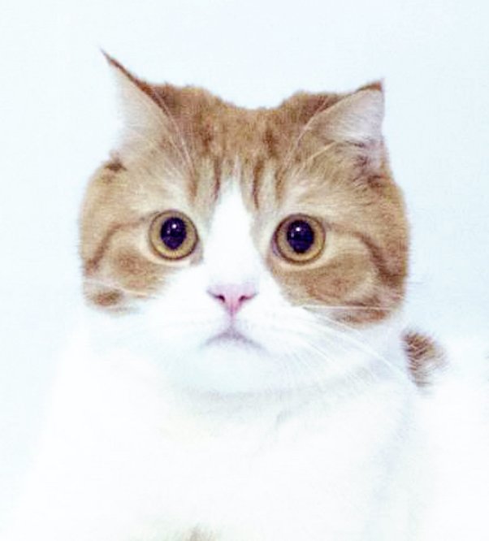

Bella is a senior in computer science. Cookie, the cat as her bio photo shows, is her cat, her other cat’s name is Zaizai. She is taking CSC 4710, CSC 4110, CSC 4220 and CSC 5825 for this semester. She is going to graduate in May 2022. Bella loves cats and urban dance.

Noah is a Computer Science student in his senior year at Wayne State University. He hopes to graduate May 2022 with a B.S. in Computer Science. In his free time, Noah enjoys watching sports and rooting on the Detroit sports teams.
Colin is a Computer Science student in his seniorish/super super senior year at Wayne State University. His planned graduation date is December 2022. After this semester, he needs to complete: Computer Operating Sytems + Lab, Introduction to Theoretical Computer Science, two Computer Science Electives, and since he loves physics so much, University Physics for Engineers II. Once Colin finishes those classes, he will complete his Senior Project which will allow him to shift his focus on his ultimate goal: World Domination. If World Domination does not work out, he will continue to watch sports, exercise, write bios, and try to get better in his computer career.